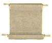

What We Do

Any good bookstore will offer you a copy of the complete works of William Shakespeare. The writings of the Bard have been in print for the better part of half a millennium.
Unfortunately, not every author has the lasting popularity of Mr. Shakespeare. (Sometimes, this is for a good reason...) But there are many worthy works, out of print for many years, that are nevertheless of interest to many people.
- Religious and theological works
- Works of historical merit
- Studies in scientific fields
- Secondary classic novels
In addition, many modern works could still sell a limited number of copies, but not enough to justify the risk of paying for and inventorying a traditional print run of several thousand copies.
The Solution: Republishing
Perennity Publishing has developed a new method to answer all these situations: republishing. You send us a book. We scan it, and thoroughly proofread the text into a Microsoft Word document. We also generate a PDF file suitable for submission to a republishing printer. This is genuinely republishing, not simply an image-scan of each page: you can resize or change the font, change the page size, change the style sheet, or export into any other electronic format, such as HTML or electronic books.
- A real, editable Microsoft Word document
- All images scanned in and added electronically
- Table of Contents and Index formatted for computer generation, so the page numbers are automatically updated after any change affecting them.
- Even the cover is prepared as a digital file, ready for publishing.
This allows you to easily and cheaply reissue books for different markets:
- Make a "large print" edition simply by changing the font size in the Word stylesheet.
- Resize the book to 8-1/2 x 11 for academic usage
- Put it online
Return to Print
Your book can be transmitted to an "on-demand" printer using a standard Adobe Acrobat PDF file for reprinting. You can use the PDF we provide, or you can make any changes you desire to the Word document and generate your own PDF using Adobe Acrobat software.
In brief, an on-demand printer owns a large, expensive commercial laser printer and an automatic binding machine, and generates copies of books one at a time, as orders come in. The on-demand printer can provide a link to Amazon and other wholesalers' databases, so anyone in the world can order a copy of the book, which is automatically printed and shipped without you ever touching it. Now the book is officially back in print, and will stay that way, forever. You simply collect your royalties from sales.
Note: Perennity Publishing does not operate an "on-demand" printing service, but can recommend such services to clients.
Who?
This service is for anyone who has rights to any book that they want to be back in print.
- American copyright laws are very complicated. However, in brief, any book which bears a publishing date before 1907 is guaranteed to be in the public domain. Anyone can republish the book and offer it for sale. All you need is a copy for scanning. We have obtained a statement to this effect from an intellectual property attorney for reassurance, or you may consult your own counsel.
- Most, but not all, books published between 1907 and 1927 are also in the public domain. A search can quickly be conducted by the United States Copyright Office via their Web page at http://www.copyright.gov/records.
- Most books published after 1927 are in copyright, and thus cannot be republished by just anybody. However, if you have written a book and not signed over your rights to another publisher, or if you are a publisher who owns the copyrights to out-of-print but still saleable books, our service can assist you to make more money from your property. For legal reasons, we must require proof of copyright ownership, or presence of the book in the public domain, for books published after 1907.
Rewards
- If you're a publisher, you can continue to make money on properties you thought were worthless.
- If you're a rejected author, you can see your book in print for a very low price, both in paperback and library hardcover. Become a genuine published author, and who knows, maybe a sleeper hit!
- If you're a library, you can "do well while doing good" by returning works of historical value to availability to researchers and scholars all over the world, without wearing out your priceless original copy - and receive payment every time someone purchases one.
- If you're an expert or hobbyist in a specialized field, make the important works of your specialty available to your peers.
And remember, once returned to print, each book will never again be out of print. Make a gift to history and future generations, by making knowledge, entertainment, or information available for all time with Perennity Publishing.